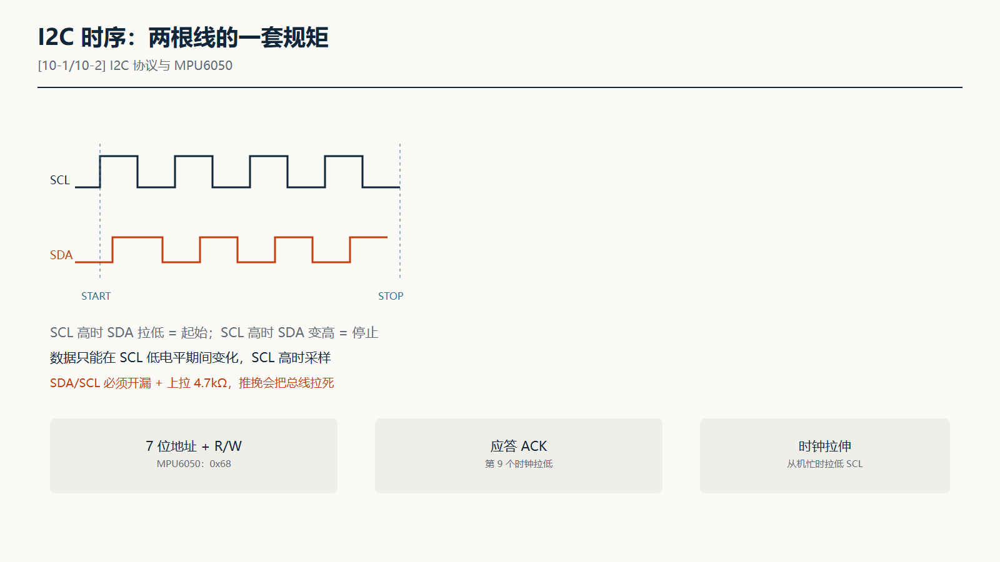

课程时长：约 70 分钟（两节） | 深度版 | 配套结构图与看图理解
10-1 讲 I2C 协议：两根线怎么寻址、怎么应答；10-2 介绍 MPU6050：地址、寄存器、数据格式。
I2C 是传感器最常用的接口，理解时序之后，软件模拟和硬件外设只是两种实现方式。
画出 I2C 的起始、地址、应答、停止
解释为什么必须开漏 + 上拉
说清 MPU6050 的地址与寄存器
算出读取一次数据的耗时

图 17 I2C 时序：SCL 打拍子，SDA 传数据，起始/停止由 SDA 在 SCL 高时跳变定义
上面是 SCL（主机打拍子），下面是 SDA（数据）。SCL 高时 SDA 拉低 = 起始；SCL 高时 SDA 变高 = 停止。
数据只能在 SCL 低电平期间变化，SCL 高时采样。第 9 个时钟是从机的应答位：拉低表示 ACK。
SCL 与 SDA 都是开漏输出，靠上拉电阻（常见 4.7kΩ）拉高。开漏才能实现“线与”：任何一个设备拉低，整条线就是低。
推挽输出会主动输出高，两个设备一高一低就是短路——这是 I2C 必须开漏的根本原因。
| 阶段 | 动作 | 要点 |
|---|---|---|
| 起始 | SCL 高时 SDA 由高变低 | 所有从机开始监听 |
| 地址 | 7 位地址 + 1 位读写 | 0 写、1 读 |
| 应答 | 第 9 个时钟从机拉低 SDA | 低 = ACK，高 = NACK |
| 数据 | 每 8 位 + 1 位应答 | 高位先发 |
| 停止 | SCL 高时 SDA 由低变高 | 总线回到空闲 |
多主机时，SCL 采用“线与”，谁拉低时间最长谁说了算，这叫时钟同步；SDA 上先发 1 后发 0 的主机会退出，这叫仲裁。
单主机系统里基本遇不到，但面试会问。
| 项 | 值 | 说明 |
|---|---|---|
| 7 位地址 | 0x68 | AD0 接低；接高则 0x69 |
| 写地址 | 0xD0 | 0x68 左移一位 |
| 读地址 | 0xD1 | 写地址 + 1 |
| 加速度寄存器 | 0x3B 起 6 字节 | X/Y/Z 各 2 字节，高字节在前 |
| 角速度寄存器 | 0x43 起 6 字节 | 同上 |
| WHO_AM_I | 0x75 | 读回 0x68，用于自检 |
先“写”寄存器地址，再“读”数据：START → 0xD0 → 寄存器号 → 重复 START → 0xD1 → 读 N 字节 → 最后一字节回 NACK → STOP。
这个“写地址再读”的模式，是所有 I2C 寄存器型传感器的通用读法。
I2C_Start(); I2C_SendByte(0xD0); /* 写 */ I2C_RecvAck(); I2C_SendByte(0x3B); /* 寄存器 */ I2C_RecvAck(); I2C_Start(); /* 重复起始 */ I2C_SendByte(0xD1); /* 读 */ I2C_RecvAck(); for (i = 0; i < 6; i++) buf[i] = I2C_RecvByte(i == 5 ? 0 : 1); I2C_Stop();
为什么 I2C 只需要两根线：它是地址寻址总线，所有从机挂在同一对线上，靠 7 位地址区分；SPI 靠片选，每多一个从机多一根 CS。
为什么上拉电阻不能省：开漏输出高时呈高阻，没有器件把线拉到 VDD；没有上拉，所谓“高电平”只是悬空。
例：标准模式 100kHz，一字节 9 位（8 数据 + 1 应答）≈ 90µs；读 6 字节约 0.6ms。
快速模式 400kHz 下，同样 6 字节约 0.15ms。
上拉取值：总线电容 100pF、要求上升时间 < 300ns 时，R ≤ 300ns/(0.847×100pF) ≈ 3.5kΩ，所以 400kHz 常取 2.2–4.7kΩ。
| 错误写法 | 后果 | 正确做法 |
|---|---|---|
| 地址写成 0x68 直接用 | 把 7 位地址当 8 位发 | 写 0xD0、读 0xD1 |
| 没有上拉电阻 | SDA 拉不高 | 加 4.7kΩ |
| 读完不回 NACK | 从机继续发，总线异常 | 最后一字节回 NACK |
| 忘记重复起始 | 从机认为还在写 | 读之前重发 START |
地址左移一位的原因：I2C 帧里地址占 7 位，最低位是读写位，所以 7 位地址要左移后与 R/W 拼成一个字节。
MPU6050 数据为什么高字节在前：传感器内部是大端，读出来后要 (high << 8) | low 拼成 int16，再除以灵敏度得到物理量。
用逻辑分析仪解码，确认地址、寄存器、数据三段
读 WHO_AM_I，确认返回 0x68
静止时读加速度，Z 轴应接近 1g
| 现象 | 原因 | 解决 |
|---|---|---|
| 读不到应答 | 地址错或没上拉 | 确认 0xD0 与上拉 |
| 数据全 0xFF | 从机没上电或地址错 | 量电源、换地址 |
| 偶尔卡死 | 总线被拉低 | 9 个时钟 + STOP 恢复 |
| 数值乱跳 | 量程/换算错 | 核对灵敏度系数 |
Q1. I2C 为什么开漏？
A：多设备线与，避免推挽短路。
Q2. 起始条件是什么？
A：SCL 高时 SDA 下降。
Q3. ACK 怎么产生？
A：第 9 个时钟从机拉低 SDA。
Q4. MPU6050 地址？
A：7 位 0x68，写 0xD0、读 0xD1。
Q5. 读寄存器为什么要重复起始？
A：切换方向，从写变读。
Q6. 最后一字节为什么回 NACK？
A：告诉从机停止发送。
Q7. 上拉电阻怎么选？
A：按总线电容与速率，常用 4.7k。
Q8. 时钟拉伸是什么？
A：从机拉低 SCL 表示还没准备好。
1. SCL 高时 SDA 下降是什么？
答：起始条件。
2. MPU6050 写地址？
答：0xD0。
3. 读 6 字节要几个 ACK？
答：5 个 ACK + 1 个 NACK。
4. 没有上拉会怎样？
答：高电平拉不起来。
☐ 能画 I2C 时序
☐ 懂开漏与上拉
☐ 记住 MPU6050 地址
☐ 会写读寄存器流程